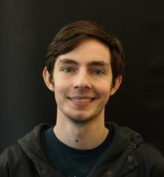

My name is Daniel D Stuart and I am a Chemistry PhD Candidate in the Cheng Lab at the University of California, Riverside. I received my Masters in March 2020 and expect to complete my PhD in Spring 2023.
My role as a graduate student involves planning, overseeing, and completing projects while managing undergraduate and other graduate students. In my time at UCR I have worked on many different sensor development projects ranging from fundamental materials design, to arrayed biosensors, and expanding optical gas sensing applications. I have worked on NSF and NIH funded research projects during my time as a graduate student. I also participated in a local UCR I-Corps program focused on transitioning academic research results into commercial products, which led to a recommendation and successful application to the Summer 2020 NSF national I-Corps program, with patents and further research relating to that technology in progress. Most recently I have worked with a commercial partner, Oceanit, to enable hydrogen sensing using optical instrumentation through a DOE SBIR collaboration. Through all of this many challenges have arose needing quick thinking and new ideas to ensure successful projects. I pride myself in my ability to tackle any problems that arise and learn new skills needed to solve them. To this end, I have gained experience in a wide array of analyses, instrumentation, software/coding languages and I am always looking out for new opportunities to tackle more problems.